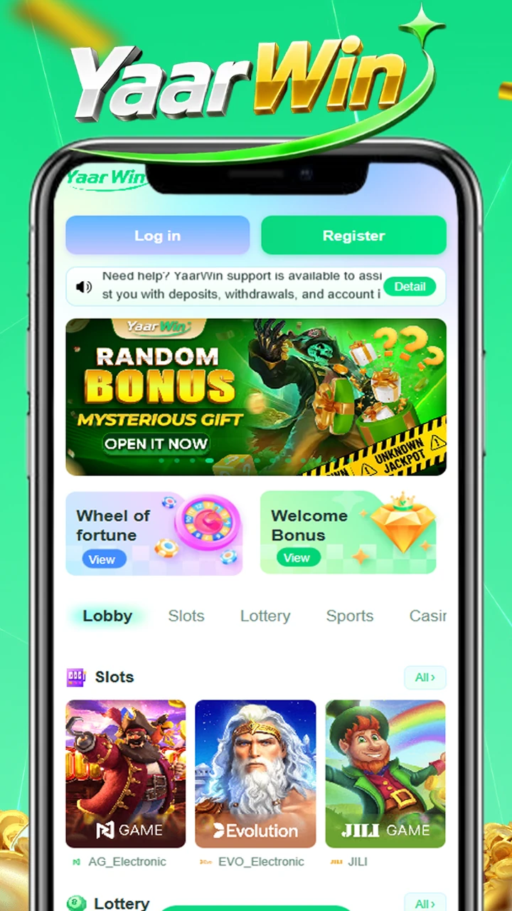

YaarWin –
Online Gaming, Sports Betting & Casino Platform for Indian Players
Enjoy fast registration, smooth gameplay, sports betting, and popular casino games with YaarWin. Access the YaarWin Game App on Android devices and explore colour prediction game, slots, lottery, Aviator, and more through a mobile-friendly platform designed for users in India.
Easy Registration & YaarWin Login
Users can create a YaarWin account within minutes using a mobile number. The YaarWin login process is simple, fast, and optimized for Android and mobile browser users.
Wide Variety of Casino Games
YaarWin offers different gaming categories including slots, lottery, Aviator, live casino games, and YaarWin colour prediction game experiences for mobile users in India.
YaarWin App Download & APK Support
Players can access the platform through browser login or install the YaarWin APK on Android devices for a smoother and faster gaming experience.
Fast Deposit & Withdrawal System
The platform supports UPI, bank transfer, and mobile wallet payments, allowing users to complete deposits and withdrawals quickly and conveniently.
Sports Betting & Live Markets
YaarWin gives users access to sports betting opportunities, live markets, and interactive gaming features directly from mobile devices.
Bonus Offers & Gift Codes
New and regular users can explore promotional rewards, bonus offers, and gift code opportunities available through the YaarWin club platform.

About YaarWin Game App
YaarWin is an online gaming and casino platform designed for users in India who want quick access to sports betting, casino games, and mobile-friendly entertainment. The platform allows users to register using their mobile number, complete YaarWin login verification, and access multiple gaming categories instantly.
The YaarWin Game App supports Android devices and mobile browsers, making it convenient for users to play anytime and anywhere. Players can explore slots, lottery games, Aviator, live casino experiences, and colour prediction game categories through a simple and responsive interface.
YaarWin focuses on smooth gameplay, secure payment systems, and fast access for mobile users. The platform also supports different payment methods including UPI, bank transfer, and mobile wallets for easier deposits and withdrawals.
Users searching for YaarWin App download, YaarWin APK, Yaar Win game, or YaarWin colour prediction game can access the platform directly through mobile devices and enjoy various online gaming experiences.
Download APK
Click the Download APK button and get the .apk file.
Enable Unknown Sources
Go to Settings → Security → Enable "Unknown Sources".
Install App
Open the APK file and tap "Install". Wait for completion.
Open and Play
Launch YaarWin, create your profile, and start winning!
Start Exploring YaarWin Today
Access casino games, sports betting, live gaming markets, and colour prediction game experiences through the YaarWin platform. Complete YaarWin login, explore the YaarWin Game App, and enjoy mobile-friendly gameplay designed for users in India.
Download YaarWin APK📱 Compatible with Android devices | Version 1.1